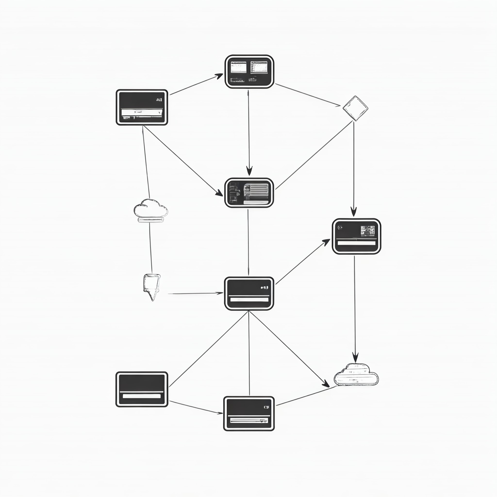

A simple guide to product by Milan Ramadev
Email: mram1221@proton.me | Location: Tokyo, Japan
There is no cookbook as every company has its own unique culture/business model and customers. You need to craft your own way through its product landscape and the need to incorporate unique strategy will destroy most cookbooks on the web. To be a product leader, get comfortable with data-driven decision making and using data when you get it with confidence. Bias towards taking action in most situations and promote high velocity decision making, especially if an issue is a 2-way door (reversible). Be the most comfortable person with ambiguity on the team and set a vision and tenets. Also, don't forget, keep it simple, cut your words in half and cut it again. Focus on an MVP, Minimum Loveable Product or Minimum Sellable Product (b2b) when building a first iteration of product in most cases for sake of efficiency in iteration. The faster companies get their products to market and start the iteration process early, the better the outcomes (usually).
Talk to customers. Observe customers. Look at customer data and feedback. Walk the store yourself and use the product(s). Look at how other companies solve similar painpoints.
You need to have a product backlog and you need to groom it regularly.
Know how to read a Profit & Loss Statement and figure out how your company makes money. That will be key to creating product goals, objectives and roadmaps.
Learn SQL and get familiar with pulling your own data from a Data Warehouse. It will empower you and make you less reliant on a business analyst. If you are not able to pull data regularly yourself, you will also probably bias to use less data when making decisions.
Learn your stack and systems as well as basic tradeoffs for DB choice and message brokers. Know how APIs work and HTTP methods in RESTful API development. Be able to read and understand logs.
Back of the envelope analysis.
Prioritization typically comes down to a function of Impact, Effort and Strategic Override. Focus on maximizing impact and minimizing effort (but don't disregard maintainability and scale). There is the RICE framework for example, but often the strategic override component requires old-fashioned stakeholder discussion to prioritize correctly.
Start with why you are creating a product/feature and decompose the problems being addressed along with tradeoffs considered. Include user stories with acceptance criteria and user flows for designers. Talk to engineers and designers to uncover edge cases and design error flows.
Break into workstreams and create a Go-to-market plan with milestones and Go/No-Go meetings with key stakeholders to ensure readiness.
Iterate by using a test and learn approach (AB Test) and incorporate customer feedback through user testing, especially at a company where you have good data (everything is logged) and B2C products. In smaller startups and B2B landscape, you might need to put more emphasis on customer interviews and user testing as AB Testing might be more difficult to do with regularity.
Experienced product leader and engineer with a passion for developing, launching and scaling products.